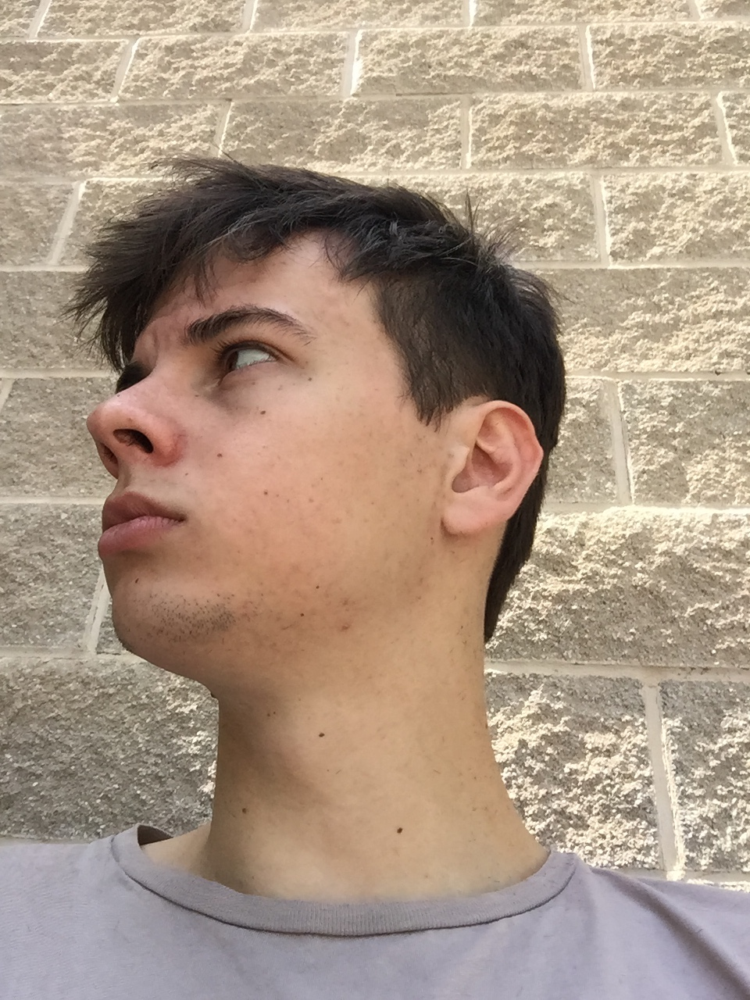
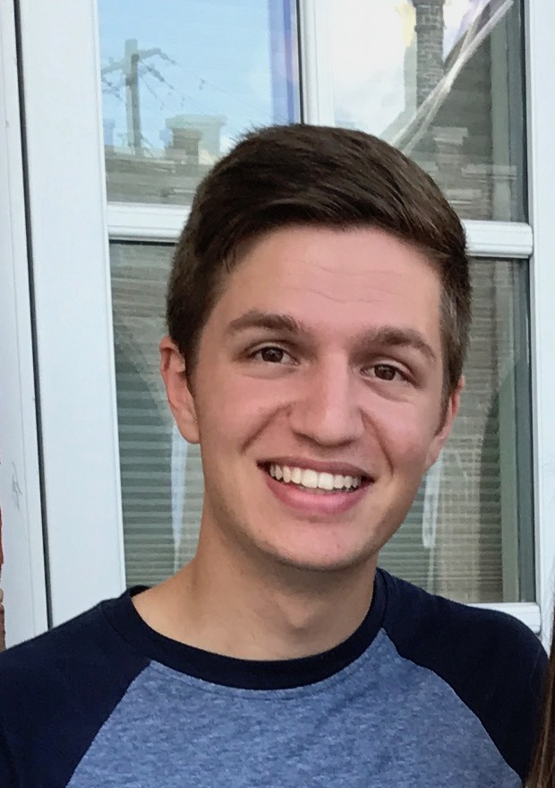

Problem Statement
Greater Europe Missions (GEM) organize and manage refugee camps to serve those displaced from their home. In order to maximize efficiency and manage resources, a new system must be put in place to validate and authorize a refugee in order for them to be given supplies. Often people will go through a supply distribution line more than once to take extra resources that may be sold on the black market. In order to provide a fair experience for everyone and reduce additional supply costs for GEM, a system must be put in place to verify an individual and only allow one visit to each line. This will be done by taking a biometric hash of the refugee, and requiring that they be verified before passing through any line.
Intended Use & Audience
This product seeks to provide a dependable system to be used by GEM volunteers and Nongovernment Organizations working with refugees in Greece, although this product can be used in refugee camps across the globe. This sytem will be used to store digital credentials that will aid workers in determining how much supplies should be issued to each refugee and their families.
Features Overview
Refugee Authentication
Refugees are authenticated upon entry to a supply line using biometric identification. This way, nobody can impersonate another and steal access to supplies, protecting supply access privileges for every individual.
Personalized Eligibility
Refugee access history is stored such that camp volunteers are able to see whether or not a candidate refugee is eligible for a given supply. More factors such as the number of family members, allergies and specific clothing sizes may be integrated to create personalized refugee profiles.
Supply Tracking
Using this product, NGOs will be able to track the quantity of people entering supply lines and compare this to the needs of individuals. If less people receive a given supply type than needed, this tool can help them identify those in need.
User-Friendly Interface
The application is designed to be usable by people from various backgrounds speaking various languages. The app principally relies on icons and a streamlined interface to break the linguistic barrier and provide a smooth experience for volunteers and end-users.
Bluetooth Synchronization
Considering the lack of wi-fi connectivity, the application is designed to synchronize with a hub in order to update internal tables pertaining to refugee accesses.
Client Organization
Greater Europe Missions (GEM) is a missions organization based in Europe. Their mission is to reach the people of Europe by multiplying disciples and growing Christ's Church. Their vision is to see God expand His kingdom through all peoples of Europe to the world.
This project is focused around their work with Refugees who have made their way to Europe. By providing a product that maximizes efficiently, the organization will better be able to serve those they come in contact with.
Project Schedule [graphic representation, not simple list or Gantt]
Place description here
Team Members
Jeffrey Rolsing
Jeffrey Rolsing is an Information Security Specialist from New Jersey. He studies Computer Science (B.S.) and Information Security at Liberty University. Jeff has a passion for helping others. He is a volunteer fireman and has used his talents to volunteer in many other ways.
When Jeff is not working, he enjoys photography, exploring new places, and meeting new people. Ultimately, he hopes to use his knowledge of Information Security to expand the knowledge of others and to make people more aware of the risks that are out there.
Taylor Iserman
Taylor is a software developer from Paris, France and based out of Virginia who is majoring in Computer Science (B.S.) with a passion for travel and using his skills to make the world a better place. He hopes to work in industry and ultimately teach mathematics and computer science at the college level.
In his spare time, Taylor enjoys drawing, writing, cooking, film and video games. He also enjoys traveling around the world and speaks both French and English fluently.
Justin Pritchard
Justin is a current student at Liberty University in Virginia studying Computer Science (B.S.). Born in Denver Colorado and raised in Scottsbluff Nebraska, his passions involve a great love for the outdoors and finding new and exciting places to visit and explore. He hopes to work as a developer focusing on web and mobile programming.
His hobbies consist of fly-fishing, hiking, backpacking, spelunking, free-diving, and wood-working.
His experience invloves creating applications and software using languages and tools such as JavaScript, HTML, CSS, React, React-Native, and MongoDB.
Phillip Sloan
Phillip is pursuing a Bachelor of Science degree in Computer Science specializing in Software Engineering and Information Security student at Liberty University in Lynchburg, Virginia. He was born in Tarboro, North Carolina, and moved to Williamston, North Carolina early in his life. He has a passion for development and product design and hopes to work in industry as a software engineer.
He is interested in many sports such as soccer, basketball, and football, enjoys outdoor activities like hiking, and also enjoys video games.